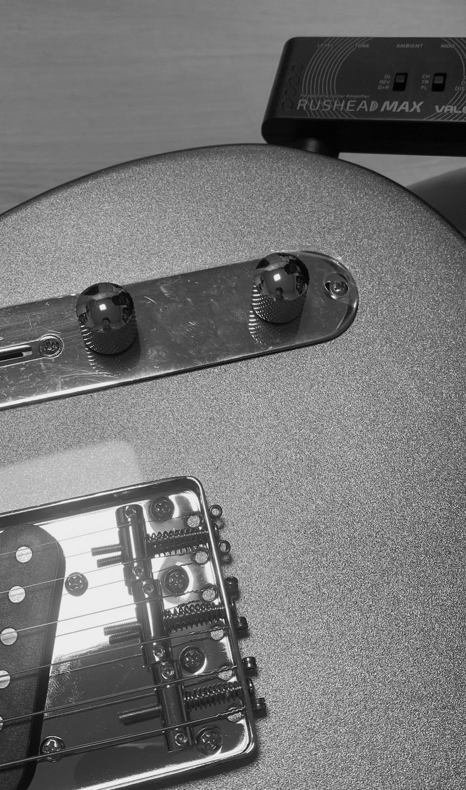
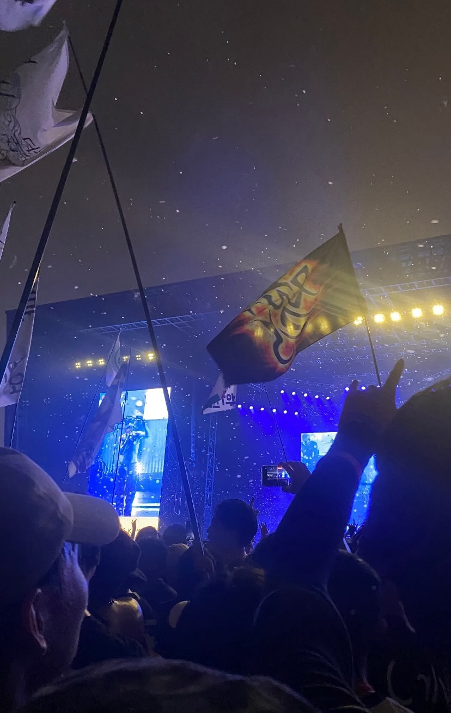
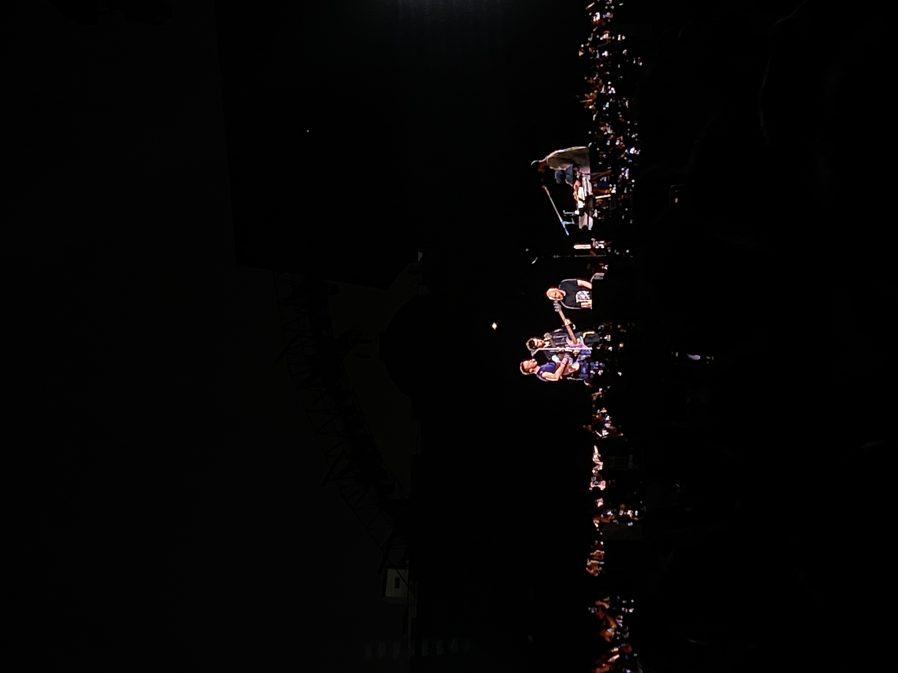
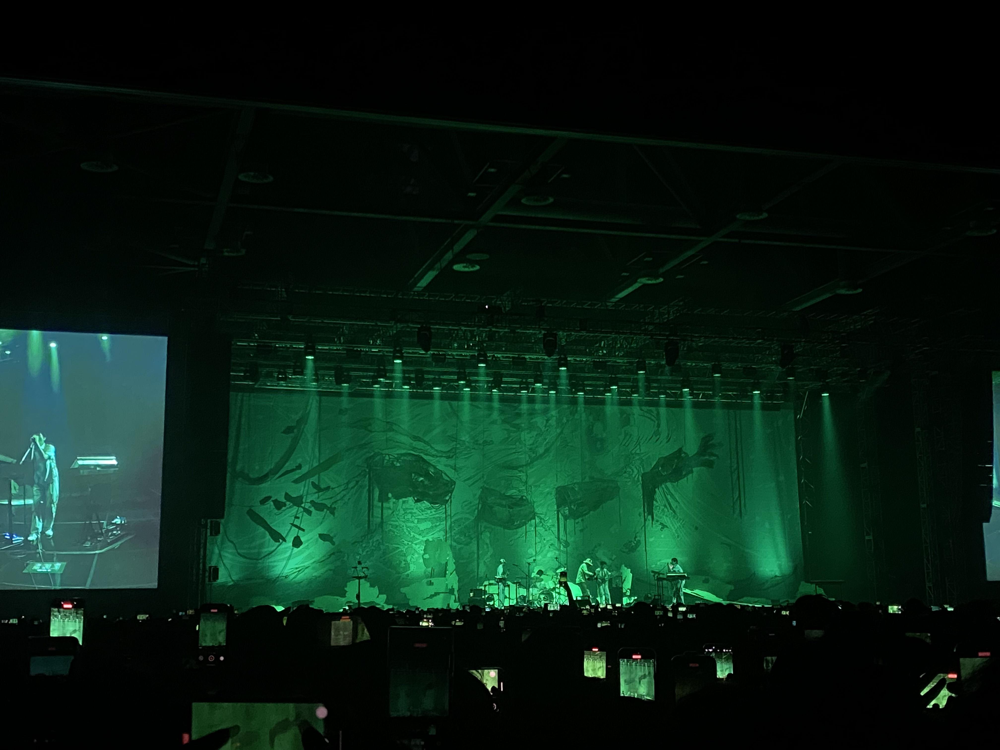

|
Hyunah Ko I am an M.S. student at the Kim Jaechul Graduate School of AI, KAIST, working in CVLAB under the supervision of Prof. Seungryong Kim. I received my B.S. in Civil and Environmental Engineering with a double major in Computer Science from Yonsei University. Previously, I worked with Prof. Seong Jae Hwang as an undergraduate researcher. |

|
Education
KAIST, Kim Jaechul Graduate School of AI · Sep. 2026 – Present
Yonsei University · Mar. 2022 – Aug. 2026 |
Research InterestsMy research focuses on visual representation learning for 3D/4D understanding and robotics. I am interested in multi-view learning and spatial representations that capture the geometry and semantics of the physical world. My interests also include compact 3D/4D reconstruction and world action models (WAMs), with the long-term goal of connecting visual perception with action.
|
Publications & PreprintsPublications and preprints in 3D/4D computer vision and robotics. I also publish as Hyuna Ko. (* denotes equal contribution) See CV for the complete list. |
|
One Loss Is Not Enough: Cross-Objective Structured Pruning for Reasoning Vision–Language–Action Models
Seongchan Kim, Soowon Son, Sangoh Kim, Hyunah Ko, Eunbeen Hong, Hyunkoo Lee, Sanghyun Lee, WonJun Moon, Kihong Kim, Dongyeon Son, Woongchan Nam, Seungryong Kim NeurIPS Workshops, 2026 Grounded and Faithful Vision-Language Models for Real-World Deployment · On-Device Intelligence: Foundation Models under Real-World Constraints · PTA: From Pretrained Representations to Acting Agents |
|
|
C4G: Learning Global Motion with Compact Gaussians for Feed-Forward 4D Reconstruction
Mungyeom Kim*, Minkyeong Jeon*, Honggyu An*, Jaewoo Jung, Hyuna Ko, Jisang Han, Hyeonseo Yu, Donghwan Shin, Sunghwan Hong, Takuya Narihira, Kazumi Fukuda, Yuki Mitsufuji, Seungryong Kim arXiv preprint, 2026 arXiv / project page |
|
|
C3G: Learning Compact 3D Representations with 2K Gaussians
Honggyu An*, Jaewoo Jung*, Mungyeom Kim, Chaehyun Kim, Minkyeong Jeon, Jisang Han, Kazumi Fukuda, Takuya Narihira, Hyuna Ko, Junsu Kim, Sunghwan Hong, Yuki Mitsufuji, Seungryong Kim CVPR, 2026 Also at the CVPR 2026 Workshop on Open-World 3D Scene Understanding and Representations arXiv / project page |
|

|
Backbone Augmented Training for Adaptations
Jae Wan Park, Junhyeok Kim, Youngjun Jun, Hyunah Ko, Seong Jae Hwang AAAI 2026 Workshop on Artificial Intelligence with Biased or Scarce Data — Oral arXiv preprint, 2025 arXiv Improving model adaptation performance through backbone augmented training techniques. |
|
Probing and Leveraging Video Diffusion Transformer Features for Robust Point Tracking
Soowon Son, Honggyu An, Jisu Nam, Hyunah Ko, Chaehyun Kim, Dahyun Chung, Siyoon Jin, Jung Yi, Junhwa Hur, Seungryong Kim arXiv preprint, 2025; revised 2026 · DiTracker arXiv / project page |
|

|
Fourier Decomposition for Explicit Representation of 3D Point Cloud Attributes
Donghyun Kim, Chanyoung Kim, Hyunah Ko, Seong Jae Hwang arXiv preprint, 2025; revised 2026 arXiv Proposing a novel method for explicit representation of 3D point cloud attributes using Fourier decomposition. |
Research Experience |
Research
|
CVLAB, KAIST (Jul. 2025 - Present)
M.S. student (since Sep. 2026); previously Undergraduate Researcher. Advisor: Prof. Seungryong Kim Medical Imaging and Computer Vision Lab, Yonsei Univ. (Jul. 2024 - Jul. 2025) Undergraduate Researcher, advised by Prof. Seong Jae Hwang Environmental Biotechnology & Thermal Lab, Yonsei Univ. (Jul. 2023 - Sep. 2023) Undergraduate Researcher, advised by Prof. Joonhong Park |
Selected Projects |

|
Multi-View Diffusion Gaussian Splatting (MVDGS)
Apr. 2025 – May. 2025 | Team Leader code
Team Project, Yonsei Artificial Intelligence
|

|
Recipe Recommendation via Object Detection and Knowledge Graph QA
Oct. 2024 – Nov. 2024 | Team Leader code
Team Project, Yonsei Artificial Intelligence
|

|
Generative Pet Memorials with LLaMA3 and Stable Diffusion
Aug. 2024 – Sep. 2024 code
Team Project, Yonsei Data Science Lab
|

|
Seoul Night Bus Route Analysis and Design
Jul. 2024 – Aug. 2024 | Team Leader report
Team Project, Yonsei Data Science Lab
|
Extracurricular activities |
Honors &
|
🥉 3rd Place, 6th YAICON, Yonsei Artificial Intelligence (2025)
Awarded for MVDGS, a single-image-to-3D generation framework combining video diffusion and 3D Gaussian Splatting. 🏆 Grand Prize, 2024 Jeju Satellite Data Utilization Competition (Jul. 2024 – Aug. 2024) Proposed a geospatial solution to address harmful green algae blooms in Jeju Island, using a segmentation model on satellite imagery to detect and map the bloom distribution. 🎖️ 77th out of 514, AirQo African Air Quality Prediction Challenge, Zindi (Mar. 2024 – Jun. 2024) Addressed the challenge of sparse ground-level sensors in African cities by developing a model to forecast hourly PM2.5 concentrations from satellite and meteorological data. |
Leadership |
Yonsei Artificial Intelligence (joined Dec. 2023)
Yonsei Computer Club (joined Jul. 2023)
Member, Yonsei Data Science Lab (Dec. 2023 - Nov. 2024)
|
Personal Life |
|
Outside of research, I'm passionate about music, especially live band performances. I frequently attend concerts and enjoy discovering new artists. Music helps me stay creative and inspired in both my personal and academic life.     |
|
Website template from Jon Barron. |